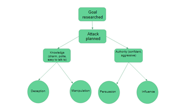

Discovery Log
Week 3
Information and Social Engineering
Social engineering: the use of deception to manipulate individuals into divulging confidential or personal
information that may be used for fraudulent purposes.
Social engineering is a common way for criminals to gain access to information they can use phishing or pretend
to be someone they aren’t to get the target to download a file, click a link or ask for a password.
This can be avoided by thinking about what you are about to do before doing it, never downloading files from
unknown or suspicious sources, never give out passwords or financial information, do not click links, use a search
engine instead.

(Savage, 2017)
Information and Technical Exposure
Identify all information collected by social media:
• Location information:
- Where we have been
- Where we work
- Where we study
- Where we live
- Places we go (Restaurants)
• Contact details
• What websites we visit:
- Interests
- hobbies
• How often we are online
• Who we are contacting
• Who our friends are
• Our plans
How the information is being collected:
Secret:
• Contact history
• Browsing history
Sensitive:
• Location
• Contact details
• Plans
• Status/Posts
• Media
Public:
• General personal information (Name, surname)
Processing information:
Contact history: Manually from social media/IoT and encrypted
Browsing history: Collected by third party (e.g. Google) and encrypted
Location: Collected by third party/IoT (e.g. Google Maps) and encrypted
Contact details: Manually entered/IoT
Plans: Manually entered
Status/Posts: Manually entered
Media: Manually entered
General personal information: Manually entered
Week 4 - Reviewing Literature
Literature review: A formal evaluation of the written academic research on a particular subject.
A literature review should be unbiased, objective and reliable.
Week 5 - Academic Writing
Be objective, factual, impersonal, cautious, eloquent.
Week 6 – HTML Markup and starting web server
HTML:
Every file should start with <'!doctype html'> and have a <'title'>.
<'h1'> is used for the header
<'p'> is used for a paragraph
To start web server:
1. Go to http://port.ac.uk/myvm
2. Start VM
3. Launch SSH
4. Type: cd ~/folder
5. http-server
To connect to school server:
1. In chrome go settings
2. Change proxy settings
3. LAN settings
4. Advanced
5. HTTP: type: wwwcache.port.ac.uk
6. Port: 81
Week 8 – separating form and content
HTML:
<’section’> is used to create different sections of a document
<’article’> specifies independent content separate from other content, it should make sense independently.
<’section id=”litReview” ‘> is used to link an id selector.
CSS:
File saved as .css
section {} is a class selector used to select which tag to style in this example section is being styled
section {
color: red; changes the section colour to red
}
.litReview {
background: pink;
color: yellow;
}
.litReview is a id selector which is used to make a tag look different to the others of the same tag.
Week 11 – Using Images
HTML:
<'img src="image.jpg” alt=’image’ title='This is an image' width="545" height="661"'>
This shows an image called image.jpg in the same folder as the html file.
The title is what shows up when you hover your mouse over the image
CSS:
img{
display: block;
margin-left: auto;
margin-right: auto;
max-width: 100%;
height: auto;
margin-top: 2%
}
Margin, width and height are used to set the images size, this automatically resizes with the browser
Bibliography
Savage, D. N. (2017, Oct). Web Foundations 1 Information & Social Engineering. Portsmouth, Hampshire, England.